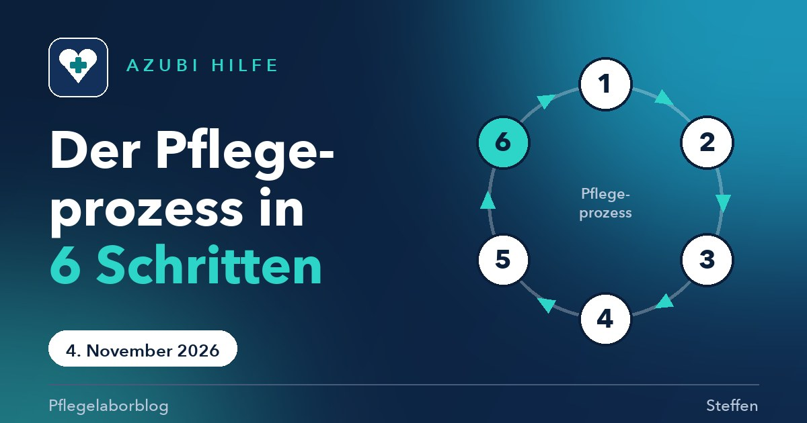
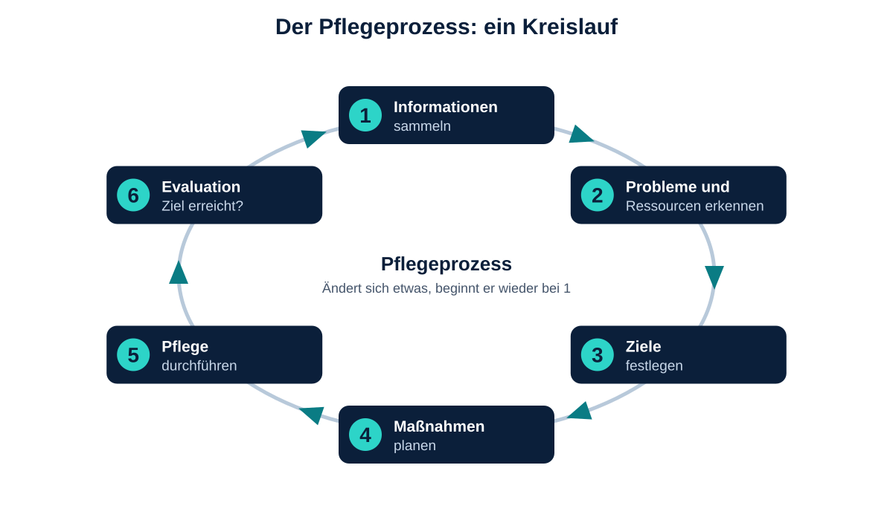

Als wir in der Schule zum ersten Mal vom Pflegeprozess gehört haben, dachte ich an ein Formular, das man eben ausfüllen muss. Sechs Kästchen, Haken dran, fertig. Beim Üben hat sich das schnell geändert. Der Pflegeprozess ist keine Schreibarbeit, sondern die Antwort auf die Frage, die mir in der Pflege ständig begegnet: Warum machen wir das eigentlich so?
Dieser Beitrag richtet sich an Azubis, die den Pflegeprozess zum ersten Mal erklärt bekommen oder ihn noch nicht richtig greifen können. Er beantwortet drei Fragen. Was ist der Pflegeprozess? Welche sechs Schritte gehören dazu? Und wie formuliere ich Probleme, Ziele und Maßnahmen so, dass das ganze Team damit arbeiten kann?
Was ist der Pflegeprozess?
Der Pflegeprozess ist ein planmäßiges, systematisches Vorgehen in der Pflege. Wir erfassen, was ein Mensch braucht, legen Ziele fest, planen Maßnahmen, setzen sie um und prüfen danach, ob sie geholfen haben (Unterrichtsunterlagen Pflegeprozess, 2026). Das Modell, das wir in der Ausbildung lernen, stammt von Fiechter und Meier und hat sechs Schritte.
Wichtig ist das Wort Kreislauf. Der Prozess hört nicht bei der Evaluation auf. Ändert sich etwas beim Menschen, geht es wieder bei Schritt 1 los.

Die sechs Schritte im Überblick
Zu jedem Schritt gehört eine Leitfrage. Wenn ich nicht weiterweiß, stelle ich mir diese Frage.
| Schritt | Leitfrage |
|---|---|
| 1 Informationen sammeln | Wer ist der Mensch, was kann er, was braucht er? |
| 2 Probleme und Ressourcen erkennen | Wobei braucht er Hilfe, was kann er selbst? |
| 3 Ziele festlegen | Was soll bis wann erreicht sein? |
| 4 Maßnahmen planen | Wie erreichen wir das Ziel? |
| 5 Pflege durchführen | Wie setzen wir die Maßnahmen gemeinsam mit dem Menschen um? |
| 6 Evaluation | Wurde das Ziel erreicht? Wenn nicht: wieder von vorn. |
Schritt 1: Informationen sammeln
Am Anfang steht die Frage, wer der Mensch überhaupt ist. Was kann er allein, wobei braucht er Unterstützung, was ist ihm wichtig? Je besser ich das weiß, desto weniger plane ich an ihm vorbei. Die Informationen kommen aus dem Gespräch mit dem Menschen selbst, aus meiner Beobachtung und aus vorhandenen Unterlagen. Das ist meine Einordnung aus dem Unterricht und der Praxis, keine Aussage aus einer bestimmten Studie.
Schritt 2: Probleme und Ressourcen erkennen
Jetzt wird aus den Informationen etwas Greifbares. Ich suche zwei Dinge: die Pflegeprobleme und die Ressourcen. Eine Ressource ist etwas, das der Mensch selbst kann oder mitbringt, zum Beispiel, dass er sich noch allein aufsetzen kann.
Pflegeprobleme formuliere ich in einem festen Schema. Es gibt zwei Arten.
| PES: aktuelles Problem | PRi: potenzielles Problem | |
|---|---|---|
| Bedeutung | Das Problem ist schon da. | Das Problem droht, es ist noch nichts passiert. |
| Bausteine | P Problem, E Ätiologie (die Ursache), S Symptom (woran ich es sehe oder höre) | P Problem als Gefahr, Ri Risikofaktoren (was die Gefahr ausmacht). Kein Symptom. |
| Beispiel | P akuter Schmerz, E Ellenbogenfraktur, S gibt 6 von 10 auf der Schmerzskala an | P Sturzgefahr, Ri Schmerzen, Hämatome an beiden Knien, fremde Umgebung |
Die Merkregel dazu: Ist ein Symptom da, ist es ein PES. Gibt es nur ein Risiko, ist es ein PRi. Kann der Mensch das Problem selbst ausgleichen, zum Beispiel mit einem Hörgerät, ist es kein Pflegeproblem.
Dazu kommt ein Gedanke, der mir im Unterricht hängen geblieben ist. Wir pflegen nicht die Diagnose, sondern den Menschen. Bei einer Tonsillitis (Mandelentzündung) ist das Pflegeproblem nicht die Entzündung selbst. Das Pflegeproblem ist, was sie mit dem Menschen macht: Er hat Schmerzen, weint, spricht weniger und ist stiller als sonst (eigene Mitschrift aus dem Unterricht).
Schritt 3: Ziele festlegen
Ein Ziel sagt, was am Ende anders sein soll. Es wird immer aus Sicht des Menschen geschrieben, nicht aus Sicht der Pflege. Für mich war das am Anfang die größte Umstellung.
| So ja | So nicht |
|---|---|
| positiv, als Zustand: „Herr M. ist schmerzfrei“ | mit Hilfsverben: „Herr M. soll oder kann schmerzfrei sein“ |
| im Präsens: „Herr M. trinkt 1,5 Liter am Tag“ | im Futur: „Herr M. wird mehr trinken“ |
| aus Sicht des Menschen | aus Sicht der Pflege: „Pflegekraft gibt Getränke“ |
| mit Datum: „bis 25.09.2026“ | ohne Zeit: „bald“, „bis auf Weiteres“ |
Ob ein Ziel taugt, prüfe ich mit der SMART-Regel: spezifisch (ist klar, was genau gemeint ist?), messbar (kann ich nachprüfen, ob es erreicht ist, zum Beispiel an einer Skala, an Milliliter oder Kilogramm?), akzeptiert (will der Mensch das Ziel selbst?), realistisch (ist es in der Zeit schaffbar?) und terminiert (steht ein Datum dabei?).
Ein Beispiel: „Herr M. trinkt ab dem 23.09.2026 mindestens 1,5 Liter am Tag, dokumentiert im Trinkprotokoll.“ Das ist messbar, hat ein Datum und beschreibt einen Zustand.
Schritt 4: Maßnahmen planen
Jetzt kommt die Frage, wie wir das Ziel erreichen. Eine Maßnahme muss so eindeutig beschrieben sein, dass jede Kollegin und jeder Kollege sie gleich umsetzt. Dafür gibt es die W-Fragen.
| W-Frage | Beispiel |
|---|---|
| Wer? | zuständige Pflegefachkraft |
| Was? | Unterstützung bei der Ganzkörperwäsche |
| Wo? | am Bett im Zimmer |
| Womit? | Waschschüssel, rückfettende Waschlotion |
| Wie? | anleiten, nur den verletzten Arm übernehmen, Sichtschutz |
| Wann? | morgens im Frühdienst |
| Wie oft? | einmal täglich |
Hier steckt der Sinn der ganzen Planung. Steht die Maßnahme genau da, arbeitet das ganze Team nach demselben Plan, auch wenn ich selbst gerade nicht im Dienst bin. Prophylaxen (vorbeugende Maßnahmen, zum Beispiel gegen Stürze oder Druckgeschwüre) gehören mit in diese Planung. Wie das bei Stürzen aussehen kann, steht in meinem Beitrag zur Sturzprophylaxe.
Schritt 5: Pflege durchführen
Jetzt wird umgesetzt, was geplant ist, und zwar gemeinsam mit dem Menschen. Das ist kein Nebensatz. Eine Maßnahme, die der Mensch nicht versteht oder nicht will, funktioniert selten.
Schritt 6: Evaluation
Evaluation heißt, die Wirkung zu prüfen. Wurde das Ziel zum geplanten Datum erreicht? Wenn ja, ist das gut, und die Maßnahme kann bleiben oder auslaufen. Wenn nicht, frage ich nach dem Grund. War das Ziel zu hoch gesteckt? War die Maßnahme nicht passend? Hat sich beim Menschen etwas verändert? Dann geht es zurück zu Schritt 1. Genau deshalb ist der Pflegeprozess ein Kreislauf.
Alle sechs Schritte an einem Beispiel
Zum Zusammensetzen ein erfundenes Beispiel. Herr M. ist eine ausgedachte Person und steht für keinen echten Menschen.
| Schritt | Im Beispiel |
|---|---|
| 1 Informationen | Herr M. trinkt im Alltag wenig, das fällt im Gespräch und im Trinkprotokoll auf. Er kann selbst nach einem Glas greifen. |
| 2 Probleme und Ressourcen | Problem: trinkt zu wenig. Ressource: kann sein Glas selbstständig halten und austrinken. |
| 3 Ziel | Herr M. trinkt ab dem 23.09.2026 mindestens 1,5 Liter am Tag, dokumentiert im Trinkprotokoll. |
| 4 Maßnahmen | Wer, was, wann und wie oft sind genau beschrieben, zum Beispiel: Getränk in Reichweite stellen und zum Trinken anregen. |
| 5 Durchführung | Das Team setzt die Maßnahmen um und erklärt Herrn M., warum das wichtig ist. |
| 6 Evaluation | Am Stichtag wird das Trinkprotokoll angesehen. Ziel erreicht? Wenn nicht, wird geprüft, warum, und der Prozess beginnt von vorn. |
Was das für die Praxis bedeutet
Der Pflegeprozess beschreibt, was unsere Aufgaben sind und warum wir sie erledigen. Er sorgt dafür, dass nicht jede Kollegin und jeder Kollege etwas anderes macht. Er macht nachvollziehbar, warum eine Maßnahme im Plan steht, und er zeigt, ob sie etwas gebracht hat. Das ist meine Einordnung aus der Ausbildung.
Was ich für mich mitnehme: Wenn ich im Einsatz eine Maßnahme nicht verstehe, kann ich nach dem Ziel dahinter fragen. Und wenn ich selbst etwas plane, schreibe ich es so, dass jemand anderes es morgen genauso machen kann wie ich heute.
Wie ich mir meine Unterlagen dazu ordne, steht in meinem Beitrag Wie ich meine Ausbildung digital ordne, und wie in der Schule überhaupt gelernt wird, in So lernen wir in der Pflegeausbildung.
Zur Einordnung: Dieser Beitrag beruht auf meinen Unterrichtsunterlagen und Mitschriften zum Sechs-Phasen-Modell nach Fiechter und Meier. Je nach Quelle wird der Pflegeprozess auch mit anderer Schrittzahl beschrieben. Hier steht die Fassung, die wir in der Ausbildung lernen. Die Beispiele sind erfunden.
Häufige Fragen
Was ist der Unterschied zwischen PES und PRi?
Ein PES beschreibt ein Problem, das schon da ist, mit Ursache und Symptom. Ein PRi beschreibt eine Gefahr, die erst droht, mit Risikofaktoren und ohne Symptom (Unterrichtsunterlagen Pflegeprozess, 2026).
Warum sind Pflegeziele aus Sicht des Menschen geschrieben?
Weil es um seinen Zustand geht und nicht darum, was die Pflege tut. „Herr M. trinkt 1,5 Liter“ beschreibt den Menschen, „Pflegekraft gibt Getränke“ nur die Pflege (Unterrichtsunterlagen Pflegeprozess, 2026).
Ist der Pflegeprozess nur Papierkram?
Aus meiner Sicht nein. Er ist die Denkweise hinter der Dokumentation. Das Papier ist nur der Ort, an dem das Ergebnis steht. Das ist meine Einschätzung und keine Studienaussage.
Das Wichtigste in Kürze
- Der Pflegeprozess hat sechs Schritte und ist ein Kreislauf: Informationen sammeln, Probleme und Ressourcen erkennen, Ziele festlegen, Maßnahmen planen, Pflege durchführen, Evaluation.
- Probleme schreibe ich als PES (aktuell, mit Symptom) oder PRi (droht, mit Risikofaktoren).
- Ziele beschreiben einen Zustand des Menschen, im Präsens, mit Datum und messbar.
- Maßnahmen beantworten die W-Fragen so genau, dass das ganze Team gleich handelt.
- Bei der Evaluation prüfe ich, ob das Ziel erreicht wurde. Wenn nicht, beginnt der Prozess von vorn.
Quellenverzeichnis
- Unterrichtsunterlagen Pflegeprozess. (2026). Der Pflegeprozess nach dem Sechs-Phasen-Modell von Fiechter und Meier [Unveröffentlichte Unterrichtsunterlagen und eigene Mitschriften]. Unterricht der Pflegeausbildung 2026.
Hinweis
Dieser Beitrag dient der fachlichen Information und der Ausbildung. Er ersetzt keine individuelle pflegerische oder medizinische Beratung und keine Pflegeplanung für einen konkreten Menschen.
Wie erklärt dir deine Schule den Pflegeprozess? Schreib mir gerne eine Mail an vollmer.steffen@icloud.com mit dem Betreff Pflegelaborblog.